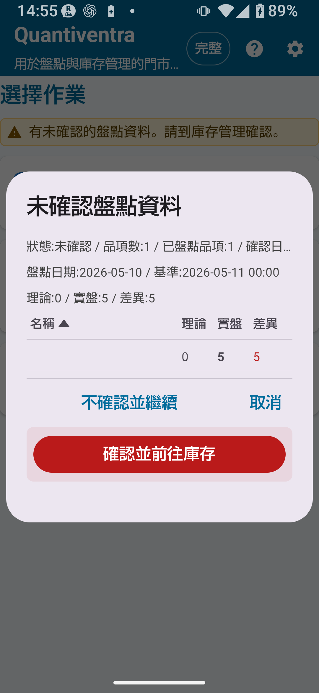

盤點完整版會移除記錄數量限制，並啟用完整版共用設定——編碼規則、位置規則、相機設定、擴充 CSV 等。此版本適合大量商品管理，以及依詳細位置進行盤點的工作流程。

| 功能/設定 | 標準版 | 完整版 |
|---|---|---|
| 主資料筆數 | 最多300筆 | 不限 |
| 盤點歷史記錄筆數 | 最多1,000筆 | 不限 |
| 匯出筆數 | 最多300筆 | 不限 |
| 詳細編碼規則設定 | ✗ | ○ |
| 詳細位置規則設定 | ✗ | ○ |
| 詳細相機設定 | ✗ | ○ |
| 擴充 CSV 匯出 | ✗ | ○ |
| 使用詳細位置 | ✗（可設定詳細模式但功能受限） | ○ |
使用完整版解鎖後，位置主資料中登錄的所有位置均可用於盤點。可設定貨架編號、樓層、區域等詳細位置，不再侷限於倉庫和門市。
完整版可使用盤點 CSV 的擴充功能。CSV 匯入可用於準備盤點用商品資料，CSV 匯出則可用於保存盤點結果、備份資料，或在電腦上進一步確認。
| CSV 類型 | 用途 | 主要欄位 | 必填/選填 | 注意事項 | 可使用方案 |
|---|---|---|---|---|---|
| 盤點 CSV（2 欄） | 基本盤點主資料匯入 | 商品編號、商品名稱 | 必填 2 欄 | 無標題列，從第 1 列開始即為資料 | 所有方案 |
| 盤點 CSV（3 欄） | 含理論庫存的盤點主資料匯入 | 商品編號、商品名稱、理論庫存 | 必填 3 欄 | 匯入時不需要實際盤點數量，實際數量從盤點作業中輸入 | 所有方案 |
stocktake_summary（盤點彙總 CSV）不包含日期、時間或位置欄位。盤點歷史記錄用於確認已儲存的盤點資料。完整版解除記錄數量限制後，可保留更多盤點明細，便於日後查核、比較及匯出。
完整版中，可對已輸入的盤點資料執行「確認盤點結果」操作。確認後，盤點結果會作為正式記錄使用，並可依需要進一步反映至庫存管理。
將盤點結果反映至庫存管理後，庫存數量會依已確認的實際盤點數進行調整，差異會以調整歷史記錄的形式保存。